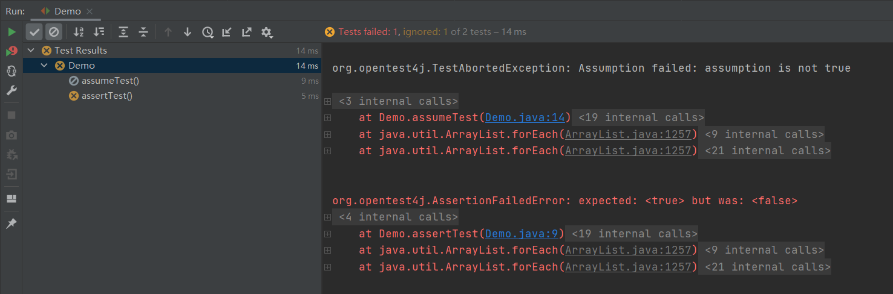

本书作者：测试开发刚哥，文章版权归个人所有，未经授权请勿转载。
JUnit5的测试不是通过名称，而是通过注解来标识的。
测试类与方法
Test Class：测试类，必须包含至少一个test方法，包括：
- 最外层的class
staticmember class@Nestedclass
Test Method：测试方法，包括：
@Test@RepeatedTest@ParameterizedTest@TestFactory@TestTemplate
Lifecycle Method：生命周期方法，包括：
@BeforeAll@AfterAll@BeforeEach@AfterEach
注意：
- Test Method和Lifecycle Method不能是
abstract，也不能return。它们可以在当前测试类中声明，也可以继承自父类或接口。 - Test class、Test Method和Lifecycle Method都不能是private。
示例代码：
import static org.junit.jupiter.api.Assertions.fail;
import static org.junit.jupiter.api.Assumptions.assumeTrue;
import org.junit.jupiter.api.AfterAll;
import org.junit.jupiter.api.AfterEach;
import org.junit.jupiter.api.BeforeAll;
import org.junit.jupiter.api.BeforeEach;
import org.junit.jupiter.api.Disabled;
import org.junit.jupiter.api.Test;
class StandardTests {
@BeforeAll
static void initAll() {
}
@BeforeEach
void init() {
}
@Test
void succeedingTest() {
}
@Test
void failingTest() {
fail("a failing test");
}
@Test
@Disabled("for demonstration purposes")
void skippedTest() {
// not executed
}
@Test
void abortedTest() {
assumeTrue("abc".contains("Z"));
fail("test should have been aborted");
}
@AfterEach
void tearDown() {
}
@AfterAll
static void tearDownAll() {
}
}
自定义显示名字
Test class和test method可以使用@DisplayName自定义在测试报告中的显示名字，支持空格、特殊字符和emoji表情符号。
示例：
import org.junit.jupiter.api.DisplayName;
import org.junit.jupiter.api.Test;
@DisplayName("A special test case")
class DisplayNameDemo {
@Test
@DisplayName("Custom test name containing spaces")
void testWithDisplayNameContainingSpaces() {
}
@Test
@DisplayName("╯°□°）╯")
void testWithDisplayNameContainingSpecialCharacters() {
}
@Test
@DisplayName("😱")
void testWithDisplayNameContainingEmoji() {
}
}
除了@DisplayName，@DisplayNameGeneration 注解能用来对显示名字做统一处理，JUnit Jupiter自带了一些生成器：
- Standard 匹配标准行为
- Simple 删除没有参数的方法后面的括号
- ReplaceUnderscores 用空格替换下划线
- IndicativeSentences 把test class和test method名字连接起来
示例代码：
import org.junit.jupiter.api.DisplayName;
import org.junit.jupiter.api.DisplayNameGeneration;
import org.junit.jupiter.api.DisplayNameGenerator;
import org.junit.jupiter.api.IndicativeSentencesGeneration;
import org.junit.jupiter.api.Nested;
import org.junit.jupiter.api.Test;
import org.junit.jupiter.params.ParameterizedTest;
import org.junit.jupiter.params.provider.ValueSource;
class DisplayNameGeneratorDemo {
@Nested
@DisplayNameGeneration(DisplayNameGenerator.ReplaceUnderscores.class)
class A_year_is_not_supported {
@Test
void if_it_is_zero() {
}
@DisplayName("A negative value for year is not supported by the leap year computation.")
@ParameterizedTest(name = "For example, year {0} is not supported.")
@ValueSource(ints = { -1, -4 })
void if_it_is_negative(int year) {
}
}
@Nested
@IndicativeSentencesGeneration(separator = " -> ", generator = DisplayNameGenerator.ReplaceUnderscores.class)
class A_year_is_a_leap_year {
@Test
void if_it_is_divisible_by_4_but_not_by_100() {
}
@ParameterizedTest(name = "Year {0} is a leap year.")
@ValueSource(ints = { 2016, 2020, 2048 })
void if_it_is_one_of_the_following_years(int year) {
}
}
}
@IndicativeSentencesGeneration可以自定义separator和generator。
结果：
+-- DisplayNameGeneratorDemo [OK]
+-- A year is not supported [OK]
| +-- A negative value for year is not supported by the leap year computation. [OK]
| | +-- For example, year -1 is not supported. [OK]
| | '-- For example, year -4 is not supported. [OK]
| '-- if it is zero() [OK]
'-- A year is a leap year [OK]
+-- A year is a leap year -> if it is divisible by 4 but not by 100. [OK]
'-- A year is a leap year -> if it is one of the following years. [OK]
+-- Year 2016 is a leap year. [OK]
+-- Year 2020 is a leap year. [OK]
'-- Year 2048 is a leap year. [OK]
除了注解，也能通过配置设定全局的默认Generator，比如在 src/test/resources/junit-platform.properties文件中：
junit.jupiter.displayname.generator.default = \
org.junit.jupiter.api.DisplayNameGenerator$ReplaceUnderscores
既可以指定现有Generator，也可以指定实现了DisplayNameGenerator接口的类。
自定义显示名字的优先级是：
@DisplayName@DisplayNameGenerationjunit.jupiter.displayname.generator.defaultorg.junit.jupiter.api.DisplayNameGenerator.Standard
断言（Assertions）
JUnit5的断言是包含在org.junit.jupiter.api.Assertions中的静态方法，比如assertTrue、assertEquals、assertNotNull、assertAll、assertThrows、assertTimeout、assertTimeoutPreemptively等。
示例代码如下：
import static java.time.Duration.ofMillis;
import static java.time.Duration.ofMinutes;
import static org.junit.jupiter.api.Assertions.assertAll;
import static org.junit.jupiter.api.Assertions.assertEquals;
import static org.junit.jupiter.api.Assertions.assertNotNull;
import static org.junit.jupiter.api.Assertions.assertThrows;
import static org.junit.jupiter.api.Assertions.assertTimeout;
import static org.junit.jupiter.api.Assertions.assertTimeoutPreemptively;
import static org.junit.jupiter.api.Assertions.assertTrue;
import java.util.concurrent.CountDownLatch;
import example.domain.Person;
import example.util.Calculator;
import org.junit.jupiter.api.Test;
class AssertionsDemo {
private final Calculator calculator = new Calculator();
private final Person person = new Person("Jane", "Doe");
@Test
void standardAssertions() {
assertEquals(2, calculator.add(1, 1));
assertEquals(4, calculator.multiply(2, 2),
"The optional failure message is now the last parameter");
assertTrue('a' < 'b', () -> "Assertion messages can be lazily evaluated -- "
+ "to avoid constructing complex messages unnecessarily.");
}
@Test
void groupedAssertions() {
// In a grouped assertion all assertions are executed, and all
// failures will be reported together.
assertAll("person",
() -> assertEquals("Jane", person.getFirstName()),
() -> assertEquals("Doe", person.getLastName())
);
}
@Test
void dependentAssertions() {
// Within a code block, if an assertion fails the
// subsequent code in the same block will be skipped.
assertAll("properties",
() -> {
String firstName = person.getFirstName();
assertNotNull(firstName);
// Executed only if the previous assertion is valid.
assertAll("first name",
() -> assertTrue(firstName.startsWith("J")),
() -> assertTrue(firstName.endsWith("e"))
);
},
() -> {
// Grouped assertion, so processed independently
// of results of first name assertions.
String lastName = person.getLastName();
assertNotNull(lastName);
// Executed only if the previous assertion is valid.
assertAll("last name",
() -> assertTrue(lastName.startsWith("D")),
() -> assertTrue(lastName.endsWith("e"))
);
}
);
}
@Test
void exceptionTesting() {
Exception exception = assertThrows(ArithmeticException.class, () ->
calculator.divide(1, 0));
assertEquals("/ by zero", exception.getMessage());
}
@Test
void timeoutNotExceeded() {
// The following assertion succeeds.
assertTimeout(ofMinutes(2), () -> {
// Perform task that takes less than 2 minutes.
});
}
@Test
void timeoutNotExceededWithResult() {
// The following assertion succeeds, and returns the supplied object.
String actualResult = assertTimeout(ofMinutes(2), () -> {
return "a result";
});
assertEquals("a result", actualResult);
}
@Test
void timeoutNotExceededWithMethod() {
// The following assertion invokes a method reference and returns an object.
String actualGreeting = assertTimeout(ofMinutes(2), AssertionsDemo::greeting);
assertEquals("Hello, World!", actualGreeting);
}
@Test
void timeoutExceeded() {
// The following assertion fails with an error message similar to:
// execution exceeded timeout of 10 ms by 91 ms
assertTimeout(ofMillis(10), () -> {
// Simulate task that takes more than 10 ms.
Thread.sleep(100);
});
}
@Test
void timeoutExceededWithPreemptiveTermination() {
// The following assertion fails with an error message similar to:
// execution timed out after 10 ms
assertTimeoutPreemptively(ofMillis(10), () -> {
// Simulate task that takes more than 10 ms.
new CountDownLatch(1).await();
});
}
private static String greeting() {
return "Hello, World!";
}
}
假设（Assumptions）
JUnit5的断言是包含在org.junit.jupiter.api.Assumptions中的静态方法，比如assumeTrue、assumingThat等。
示例代码：
import static org.junit.jupiter.api.Assertions.assertEquals;
import static org.junit.jupiter.api.Assumptions.assumeTrue;
import static org.junit.jupiter.api.Assumptions.assumingThat;
import example.util.Calculator;
import org.junit.jupiter.api.Test;
class AssumptionsDemo {
private final Calculator calculator = new Calculator();
@Test
void testOnlyOnCiServer() {
assumeTrue("CI".equals(System.getenv("ENV")));
// remainder of test
}
@Test
void testOnlyOnDeveloperWorkstation() {
assumeTrue("DEV".equals(System.getenv("ENV")),
() -> "Aborting test: not on developer workstation");
// remainder of test
}
@Test
void testInAllEnvironments() {
assumingThat("CI".equals(System.getenv("ENV")),
() -> {
// perform these assertions only on the CI server
assertEquals(2, calculator.divide(4, 2));
});
// perform these assertions in all environments
assertEquals(42, calculator.multiply(6, 7));
}
}
Assertions与Assumptions区别
Assertions如果失败，test会被标记为failed。Assumptions如果失败，test会被标记为ignored，测试不会执行。
示例：
import org.junit.jupiter.api.Test;
import static org.junit.jupiter.api.Assertions.assertTrue;
import static org.junit.jupiter.api.Assumptions.assumeTrue;
public class Demo {
@Test
void assertTest() {
assertTrue(false);
}
@Test
void assumeTest() {
assumeTrue(false);
}
}
结果：

禁用测试
@Disabled能用来禁用test class或test method，建议在括号内填写上禁用理由。
示例：
import org.junit.jupiter.api.Disabled;
import org.junit.jupiter.api.Test;
@Disabled("Disabled until bug #99 has been fixed")
class DisabledClassDemo {
@Test
void testWillBeSkipped() {
}
}
import org.junit.jupiter.api.Disabled;
import org.junit.jupiter.api.Test;
class DisabledTestsDemo {
@Disabled("Disabled until bug #42 has been resolved")
@Test
void testWillBeSkipped() {
}
@Test
void testWillBeExecuted() {
}
}
小结
本文首先介绍了如何使用测试类与方法，来编写一个JUnit5的基本测试，然后介绍了如何自定义测试报告中的显示名字。使用断言（Assertions）可以把test标记为failed，使用假设（Assumptions）可以把test标记为ignored。最后介绍了如何禁用测试。除了基本测试，JUnit5还能编写带条件的测试。
参考资料：
https://junit.org/junit5/docs/current/user-guide/#writing-tests
https://stackoverflow.com/questions/44628483/assume-vs-assert-in-junit-tests